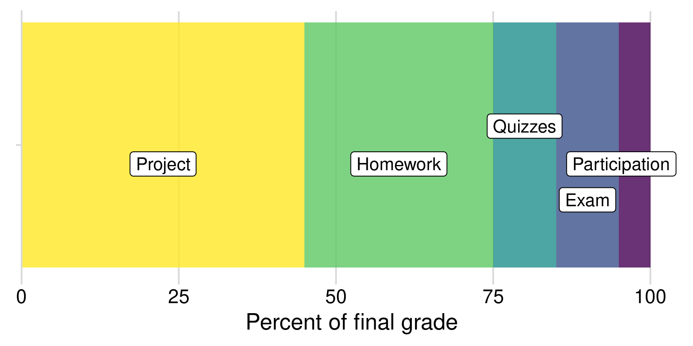

Syllabus
Course Information
| Instructor | Course |
|---|---|
| John Paul Helveston | Wednesdays |
| Science & Engineering Hall, 2830 | Tompkins 201 |
| +1 (202) 994-7173 | Aug. 26 - Dec 9, 2026 |
| jph@gwu.edu | 3:30PM - 6:00PM EST |
| @jhelvy.bsky.social | Slack |
Course Description
This course provides students with data analysis techniques to inform design decisions in an uncertain, competitive market; topics include consumer choice modeling, programming in the R programming language, survey design, conjoint analysis, optimization, market simulation, and professional communication skills. Over the course of the semester, students will learn and apply theory and methods to a team project to assess the market competitiveness of an emerging product / technology and use marketing analytics to generate design insights. All analyses will be conducted to support reproducibility from raw data to results using Quarto (which is built on the ideas of RMarkdown). At the end of the semester, students will submit a final, reproducible report of their project along with a presentation of their findings. This course has a “flipped” classroom structure. Students will spend the majority of class time working through guiding practice exercises or working on their projects. To prepare for class, students must complete weekly assignments that involve watching and reviewing recorded lecture materials and answering related practice questions.
Prerequisites
This course requires prior exposure to:
- Probability theory
- Multivariable calculus
- Linear algebra
- Regression
Each of these concepts will be applied throughout the course, and no time will be spent reviewing the foundational elements of each concept.
In addition, we will work in the R programming language throughout the course, but no prior programming experience is required. We will spend the first three weeks going through exercises to get up to speed in R.
Students are encouraged to complete this self assessment prior to registering for the course to self-assess familiarity with these concepts.
Learning Objectives
Having successfully completed this course, students will be able to:
- Import, wrangle, visualize, and export data in R.
- Design surveys to obtain informative data about consumer preferences for product features.
- Build and estimate discrete choice models.
- Analyze consumer choice data to estimate consumer preferences for product features.
- Design and create effective charts and presentations.
- Communicate results in terms of design insights.
Pep Talk!
Working in and learning a programming language can be as challenging as learning a new spoken language. Hadley Wickham (chief data scientist at RStudio and author of many amazing R packages you’ll be using) made this wise observation:
It’s easy when you start out programming to get really frustrated and think, “Oh it’s me, I’m really stupid,” or, “I’m not made out to program.” But, that is absolutely not the case. Everyone gets frustrated. I still get frustrated occasionally when writing R code. It’s just a natural part of programming. So, it happens to everyone and gets less and less over time. Don’t blame yourself. Just take a break, do something fun, and then come back and try again later.
If you’re finding yourself taking way too long hitting your head against a wall and not understanding, take a break, talk to classmates, ask questions in Slack, and try it again later.
I promise, you can do this!
Required Texts & Materials
All texts and software for this course is freely available on the web, accessible from this website.
Software
Go to the Course Software page for detailed instructions on how to install the software we’ll be using. Here’s a quick list:
- R (version 4.1.0 or later), which can be downloaded from The Comprehensive R Archive Network (CRAN)
- RStudio (Desktop Version), a free IDE for R, which can be downloaded from RStudio
- We’ll be using Slack for most communication.
Textbooks
- For learning the basics of R, I recommend referencing my book “Programming for Analytics in R”, by Professor Helveston. The book is available freely on the web at https://p4a.jhelvy.com/.
- The theoretical underpinnings to most of the modeling we will do in this course can be found in the book “Discrete Choice Methods with Simulation” by Dr. Kenneth Train. The book is available freely on the web at https://eml.berkeley.edu/books/choice2.html.
Assignments
Participation & Attendance
Attendance will be taken and will be part of your participation grade.
In-person attendance is critical as we will spend a lot of time working on problems and writing code during class. You should plan to attend class in person each week.
There will be no option for remote attendance (e.g. zoom), and class sessions will not be recorded. If you have any questions or need special accommodations, send me a message on slack and we can discuss. If you must miss class for an excused absence (e.g. medical issue), please message Professor Helveston and get notes from your fellows classmates.
Multiple absences, inappropriate or unprofessional behavior during class (such as monopolizing discussions or being rude or disruptive), not participating in classroom exercises, and not being prepared for class will result in a poor score for attendance and participation.
Quizzes
Quizzes will be given about once every other week immediately at the beginning of class (check the schedule). Make up quizzes will not be available if you miss it (except for excused absences). Please show up on time to class each week to ensure that you do not miss a quiz. Quizzes will cover material presented in previous classes and assignments during the weeks since the most-recent quiz.
Quizzes are short (10 minutes) and are designed to test for fluency and to demonstrate where additional study is needed. Quizzes are low-stakes - your worst one is dropped, and the rest count for a small portion of your final grade. If you do poorly on one or two, use that as feedback on where you need additional improvement.
Why quiz at all? Research shows that giving small quizzes throughout a class can dramatically help with retention. It’s a phenomenon known as the “retrieval effect” - basically, you have to practice remembering things, otherwise your brain won’t remember them. The phenomenon and research on it is explained in detail in the book “Make It Stick: The Science of Successful Learning,” by Brown, Roediger, and McDaniel.
Homework
Each week, students will be assigned readings and exercises to prepare for the next class period. Students will need to submit reflections on these readings each week, which may involve answering some practice questions. These are graded using a check system:
- ✔+ (110%): Responses shows phenomenal thought and engagement with the course content. I will not assign these often.
- ✔ (100%): Responses are thoughtful, well-written, and show engagement with the course content. This is the expected level of performance.
- ✔− (50%): Responses are hastily composed, too short, and/or only cursorily engages with the course content. This grade signals that you need to improve next time. I will hopefully not assign these often.
Notice that this is essentially a pass/fail system. I’m not grading your writing ability and I’m not counting the number of words you write. I’m looking for thoughtful engagement, that’s all.
Final Project
Throughout the semester, students will work in teams of 3-4 students towards a final project. The project is broken into multiple phases with key deliverables due throughout the semester. See the Project Overview page for more details.
Final Exam
The final exam is a take-home exam, and we will spend a portion of the last day of class going over the solutions together.
Grading
Category Breakdown
Final grades will be calculated as follows:
| Item | Weight | Notes |
|---|---|---|
| Participation / Attendance | 5% | (Yes, I take attendance) |
| Reflections (11) | 30 % | Weekly assignment (10 x 3%), lowest 1 dropped |
| Quizzes (5) | 10 % | Lowest 1 dropped |
| Final Exam | 10 % | Take home exam |
| Project Proposal | 5 % | Teams of 3-4 students |
| Survey Plan | 5 % | |
| Pilot Survey | 5 % | |
| Pilot Analysis | 5 % | |
| Final Survey | 5 % | |
| Final Analysis Report | 15 % | |
| Final Presentation | 5 % |
Here’s a visual breakdown by category:
Grading Scale
| Grade | Range | Grade | Range |
|---|---|---|---|
| A | 94 - 100% | C | 74 - 76.99% |
| A- | 90 - 93.99% | C- | 70 - 73.99% |
| B+ | 87 - 89.99% | D+ | 67 - 69.99% |
| B | 84 - 86.99% | D | 64 - 66.99% |
| B- | 80 - 83.99% | D- | 60 - 63.99% |
| C+ | 77 - 79.99% | F | < 60% |
The course instructors may choose to change the scales at their discretion. You are guaranteed that your letter grade will never become worse as a result of changing scales.
Rounding
I do not round final grades. Here’s why. Wherever the line is drawn, there will always be students just below or just above, and rounding will only move that bar and create another group of students who are just below and just above. Rounding does not eliminate the issue but rather just shifts it to another group of students. This is why I draw the lines before the course starts - to ensure a fair and transparent system for everyone, that way you don’t have to shoot for a moving bar. To be clear, this means I will not modify or round your final score, even if you’re very close to a different letter grade (e.g., a 93.98 is an “A-” and will not be rounded up to an “A”).
Rather than round, I grade generously throughout the semester. For example, if you give a quiz your best shot and completely fail it, you will likely get a 50% instead of a 0%. The 50% is for trying as learning still happens when you try regardless if you get the question correct (0s are reserved for those who simply don’t attempt it).
Getting Help
This class can be challenging - do not suffer in silence! We have lots of ways to get help.
Slack
All course communication will be managed through Slack. A link to sign up for the course slack page can be found on the one (and only) announcement on Blackboard.
You can use Slack to:
- Ask general questions.
- Ask for help with an assignment.
- Send direct, private messages to each other or the instructors (just like email…but better!)
Asking for help on Slack: You can post questions on slack and receive quick responses. This also enables other students to see answers to common questions. Be specific - if your code has an error you don’t understand, include the code and the error message in your question.
AMA Hours
I will hold regular “Ask Me Anything” hours each week. The specific hours will be posted on the course slack. During this period, you can come to my office (SEH 2830) and ask me anything. And I mean anything. Most of the time you may just have a question related to class, but I am also happy to discuss anything else with you regarding life, important decisions, career, art, music, dance, etc.
If the AMA hours don’t work with your schedule, you can always schedule a zoom call with me using this link. I’m available most days of the week.
Tutoring hours
Your class tutors will each hold a dedicated period of time each week for zoom tutoring hours. Please don’t make your tutors sit and do emails for two hours - come by and ask for help!
Library Services
While the University Library is not a stand in for TAs, you can schedule a consultation for general help with Coding, Programming, Data, Statistical, and GIS. See more at https://academiccommons.gwu.edu/writing-research-help
Course Policies
tl;dr
- BE NICE
- BE ON TIME
- BE HONEST
- DON’T CHEAT
- SERIOUSLY: DON’T CHEAT
Late Policy
Each students is allowed 3 late homework submission days - use them however you want, no questions asked. These are meant to cover illness, family emergencies, and religious holidays.
Beyond those, assignments are due by 11:59pm on the assigned due date unless specified otherwise. Assignments submitted up to 24 hours past this deadline will be graded to a max of 50% of the available points. Assignments submitted beyond 24 hours past the deadline will not be graded and will be assigned a 0.
If you need a special accommodation such as due to an illness, family emergency, or religious holidays, contact the instructor ahead of time.
Use of chatGPT and other AI tools
Use of large language models (LLMs) like chatGPT, Claude, etc. are not only permitted but encouraged. You need to learn how to use AI tools to learn new skills, improve productivity, and find solutions.
While LLMs are pretty good, sometimes they suck. Don’t blindly trust them - they will betray you, especially with code.
I will grade AI generated work no differently than work you produce without AI. But it’s important that you understand your work should not suck. Sometimes AI-generated work really, really sucks, so if you blindly trust an AI to do your work and submit it and it sucks, you may not like the grade.
Here are some tips on how to work with AI tools but not generate work that sucks:
- Don’t submit code that doesn’t run (actually run it before submitting it).
- Actually read what the AI generates.
- Don’t use methods I don’t teach. There are dozens of ways to do things - you should use the approach I teach. Using some other approach that an AI generates is a very bad idea.
Your goal in using tools like ChatGPT should be to see them as an assistant - a tool to help you accomplish the task - rather than as a solutions manual. Take the time to work through the code / text these tools generate and ensure that what they provide is accurate, and if not make the corrections to fix their mistakes.
Curious how LLMs actually work? Check out this article, which provides a simplified description of how they work (which itself is still quite complicated).
Cheating
Cheating results in a penalty on the first offense, and failing the course on the second offense. Cheating on assignments can include:
- Copying or stealing any amount of code from someone currently in the class or someone who has taken the class before.
- NOTE: Copying is never okay, whether the code is provided electronically, visually, audibly, or on paper. Even if you work together on an assignment, write your own code.
- Providing code you have written for an assignment to anyone else in the class.
- Putting code solutions from the course assignments online.
- Receiving code-level assistance from any person not associated with the course.
- Getting someone else to write the assignment code for you.
- Asking questions about the assignments on any online services outside of the course office hours / Slack.
Cheating on quizzes, assignments, or the final project can include:
- Referring to any external resources while completing the assignment (phones, notes, etc.).
- Copying part of an answer off of another student’s paper, even if it is very small.
- Using solutions provided by students who previously took the course.
Penalties
Violations will be reported to the Office of Student Rights & Responsibilities. Penalties are decided by the course instructors, and can vary based on the severity of the offense. Possible penalties include:
- Receiving a 0 on the assignment/quiz in question.
- Receiving a full letter grade deduction in the course.
- Automatically failing the course.
Depending on the student’s prior academic history, violations may also be accompanied by a letter to the Dean of Student Affairs, again at the instructors’ discretion. This can lead to university-level penalties, such as being suspended or expelled.
Grace Period
College is a time when you do a lot of learning. Sometimes, you might make bad decisions or mistakes. The most important thing for you to do is to learn from your mistakes, to constantly grow, and become a better person.
Sometimes, students panic and copy code right before the deadline, then regret what they did afterwards. Therefore, you may rescind any homework submission for up to 24 hours after the deadline with no questions asked. Simply email the course instructors asking to delete the submission in question, and we will do so. Deleted submissions will not be considered during plagiarism detection, though of course they will also not be graded. However, it will always be better to get a 0 (or partial credit) on an assignment than to get a cheating violation!
Children in class
I applaud all of you who attend school with children! It is difficult to balance academic, work, and family commitments, and I want you to succeed. Here are my policies regarding children in class:
- All breastfeeding babies are welcome in class as often as necessary.
- Non-nursing babies and older children are welcome whenever alternate arrangements cannot be made. As a parent of young children, I understand that babysitters fall through, partners have conflicting schedules, children get sick, and other issues arise that leave parents with few other options.
- In cases where children come to class, I invite parents/caregivers to sit close to the door so as to more easily excuse yourself to attend to your child’s needs. Non-parents in the class: please reserve seats near the door for your parenting classmates.
- All students are expected to join with me in creating a welcoming environment that is respectful of your classmates who bring children to class.
I understand that sleep deprivation and exhaustion are among the most difficult aspects of parenting young children. The struggle of balancing school, work, childcare, and graduate school is tiring, and I will do my best to accommodate any such issues while maintaining the same high expectations for all students enrolled in the class. Please do not hesitate to contact me with any questions or concerns.
Lauren’s Promise
I will listen and believe you if someone is threatening you.
Lauren McCluskey, a 21-year-old honors student athlete, was murdered on October 22, 2018 by a man she briefly dated on the University of Utah campus. We must all take action to ensure that this never happens again.
If you are in immediate danger, call 911 or GWU police at 202-994-6111 (GWPD).
If you are experiencing sexual assault, domestic violence, or stalking, if you report it to me I will listen and connect you to resources or call GWU’s Counseling and Psychological Services (202-994-5300).
Any form of sexual harassment or violence will not be excused or tolerated at GWU. GWU has instituted procedures to respond to violations of these laws and standards, programs aimed at the prevention of such conduct, and intervention on behalf of the victims. GWU Police officers will treat victims of sexual assault, domestic violence, and stalking with respect and dignity. Advocates on campus and in the community can help with victims’ physical and emotional health, reporting options, and academic concerns.
Use of Course Materials
All course materials available on the course website are developed open source - you are welcome to post and share them following the licensing guidelines listed in the license page.
However, all solutions to assignments and quizzes are proprietary. Don’t post them online or try to sell them - this is a violation of the student code of conduct and it is also a violation of the class cheating policy.
Recording in Class
You are free to record class periods (audio and / or video) for your own personal study use and only for your personal study use. If you do record a class period, you are prohibited from posting or sharing the content online or with others.
What To Do if the Instructor Does Not Arrive
Wait 20 minutes, after that you’re free to leave. One member of the class should be selected to notify the EMSE Department of the Instructor’s absence by calling the EMSE Department 202-994-4892 on next business day.
University Policies
University Policy on Religious Holidays
In accordance with University Policy, students should notify faculty during the first week of the semester of their intention to be absent from class on their day(s) of religious observance. Official university policy here: https://students.gwu.edu/accommodations-religious-holidays
- Students should notify faculty during the first week of the semester of their intention to be absent from class on their day(s) of religious observance.
- Faculty should extend to these students the courtesy of absence without penalty on such occasions, including permission to make up examinations.
- Faculty who intend to observe a religious holiday should arrange at the beginning of the semester to reschedule missed classes or to make other provisions for their course-related activities.
Support for Students Outside the Classroom
Disability Support Services (DSS): Any student who may need an accommodation based on the potential impact of a disability should contact the Disability Support Services office at 202-994-8250 in the Rome Hall, Suite 102, to establish eligibility and to coordinate reasonable accommodations. For additional information please refer to: https://disabilitysupport.gwu.edu/
Mental Health Services (202-994-5300): The University’s Mental Health Services offers 24/7 assistance and referral to address students’ personal, social, career, and study skills problems. Services for students include: crisis and emergency mental health consultations confidential assessment, counseling services (individual and small group), and referrals. https://healthcenter.gwu.edu/counseling-and-psychological-services
Academic Integrity Code
Academic dishonesty is defined as cheating of any kind, including misrepresenting one’s own work, taking credit for the work of others without crediting them and without appropriate authorization, and the fabrication of information. For the remainder of the code, see: https://studentconduct.gwu.edu/code-academic-integrity
In addition to the formal code of academic integrity, the instructor expects that students will treat this course with the level of professionalism required in the workplace. Remember that real firms are sponsoring student projects throughout the semester; in a workplace setting, these firms would be paying clients for the analyses being conducted. This course prepares students to succeed in the workplace, and maintaining a high degree of professionalism is expected.
Super Heros
Once you have read this entire syllabus and viewed the course schedule, post a picture of your favorite super hero in the welcome channel in Slack.
For real.
Brownie points if it’s animated.